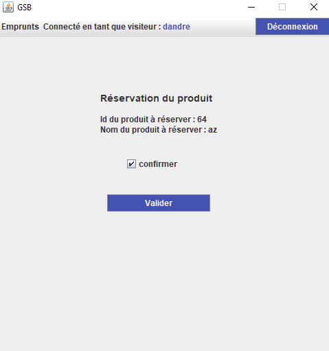
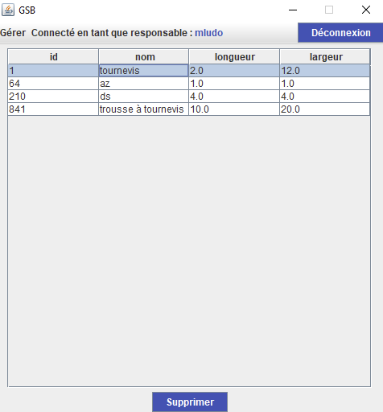

A PROPOS DU PROJET
Ce projet a été réalisé durant ma deuxième année de BTS SIO. C'est une application développée en Java et accessible après authentification.
Le laboratoire Galaxy Swiss Bourdin met à disposition de ses visiteurs médicaux du matériel médical ou informatique et des véhicules pour visiter les praticiens. Pour cela, le laboratoire souhaite mettre en place une application de gestion et de réservation des matériels que peuvent emprunter les visiteurs médicaux pour se rendre en visite auprès des praticiens. Notre responsable informatique nous demande de mettre en place une application développée en Java et accessible après authentification.
Les langages utilisés sont :
- Java
- SQL
L'organisation du code de notre projet est basée sur l’architecture MVC (Model-View-Controller). Cette dernière a pour objectif de bien organiser et structurer son code source. Elle consiste à distinguer trois entités différentes qui sont le Modèle, la Vue et le Contrôleur, chacun ayant un rôle bien précis dans l’interface.
Quelques images de l'application...
Page d'authentification
Barre de navigation du visiteur
Réservation d'un matériel
Pour réserver un matériel, le visiteur doit cliquer sur le matériel qu’il souhaite réserver. La ligne sera mise en surbrillance. Ensuite, il clique sur le bouton “Réserver”.

Une page s’affiche avec les informations du produit à réserver. Le visiteur doit cocher la case pour confirmer sa réservation.
Ensuite, il doit sélectionner la date de début et de fin de location. Il est également important de préciser les heures.
Ajout d'un véhicule par le responsable
Pour pouvoir ajouter un véhicule, il faut cliquer sur le menu “Ajouter” dans la barre de navigation, puis se rendre dans “Ajouter un véhicule”. Il suffit de remplir les zones de saisie afin de pouvoir ajouter un véhicule. La liste déroulante permet de sélectionner le type de véhicule. Attention, il est important de bien remplir toutes les zones de saisie. Autrement, le véhicule ne pourra pas être ajouté. Une boîte de dialogue sera affichée si l’identifiant saisi pour le véhicule en question existe déjà.
Suppression d'un matériel par le responsable
Pour supprimer un matériel, il faut cliquer sur le menu “Supprimer” dans la barre de navigation, puis se rendre dans “Supprimer un matériel”. Dès lors, il suffit de cliquer sur la ligne du matériel à supprimer. Elle sera alors mise en surbrillance. Ensuite, il faut cliquer sur le bouton “supprimer”, situé en bas de la page. Le matériel sera alors totalement supprimé.
Exportation des statistiques sous forme de PDF (pour le directeur)
Le directeur peut également décider de générer un fichier PDF, récapitulatif de toutes les statistiques. Pour cela, il doit simplement cliquer sur le bouton “Générer”. Un fichier au format PDF sera alors exporté dans le répertoire Document/GSB/pdf.
Notre projet s’est bien déroulé. Nous avons bien réparti les différentes tâches ainsi que le travail à faire. Nous sommes restés en contact et nous avons réalisé un git commun pour pouvoir continuer à travailler en collaboration. De ce fait, il était plus simple de réunir les avancées de chacun et de rassembler les morceaux de codes. L’application Java nous paraît complète et simple d'utilisation (grâce au respect des normes UI/UX) et tout ce que nous voulions faire a été fait dans les temps. Pour finir, ce projet a été une bonne solution pour revoir et utiliser les notions Java ainsi que l’aspect objet du langage.